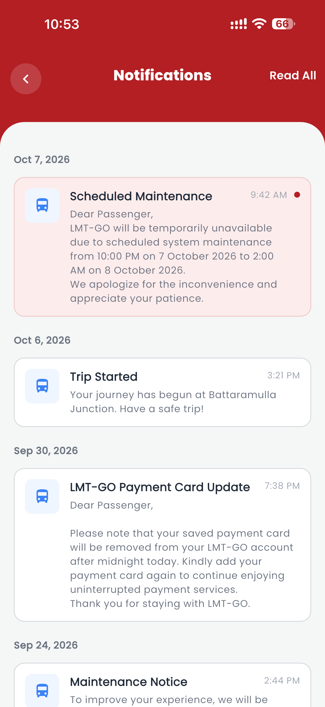
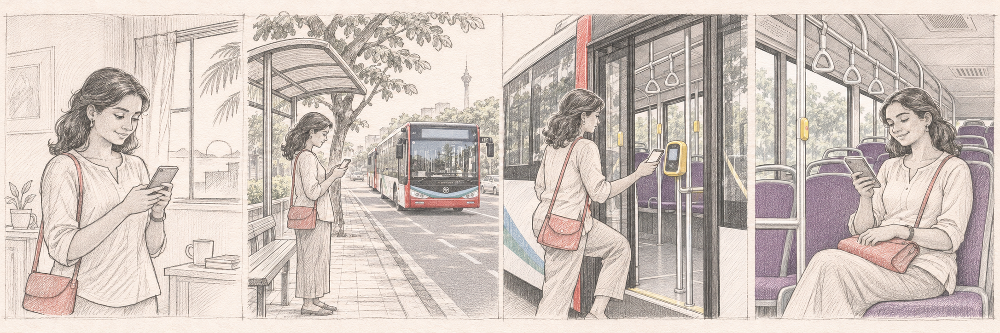

LMT Go · Independent redesign
 LMT Go
LMT Go
A different starting point for the everyday commute. Less searching through an app, more clarity about the ride ahead.
A What If exploration by Asith Wijenayake. Concept and prototype, 2026.


a fresh perspective
The thought experiment
Same city.
A different starting point.
The original app opens with a wallet, passes, and a set of actions. I wanted to explore a home screen built around the question a rider has right now: how do I get where I’m going?
This is an independent redesign of an existing product, developed as an interactive concept. The decisions shown here are design hypotheses, rather than measured research outcomes.
- Focus
- Journey planning & rider confidence
- My work
- Product rethink, UX, UI & prototype
- Built with
- ChatGPT Sites · HTML, CSS & JavaScript
01 / The existing experience
The app I started with.
The supplied screens show passes, route selection, and trip planning as separate destinations. The redesign connects them around one ongoing journey.



02 / Start with the person
A commute, in four moments.
One illustrated scenario connects the screens to the moments they need to support.

Before leaving
See the next departure and decide when to head out.
At the stop
Check the direction, boarding point, and approaching bus.
Getting on
Bring up the boarding code at the moment it is needed.
Along the way
Stay with the journey, the next stop, and the destination.
03 / The redesign
Keep the journey together.
The arrival, the route, the connection, and the boarding code belong to the same story.
A journey-led home
Arrival and route progress become the starting point.
The whole way there
Plan the connection from your starting point to your destination.

The bigger picture
Explore the route network and choose a direction.
Ready to board
The boarding code stays part of the journey.
04 / Use the idea
A prototype
you can ride through.
The working LMT Go concept, inside a mobile simulator. Explore the flows and see how the decisions connect.
Independent concept. Journey times, bus positions, and payment flows are illustrative.
Open the prototype on its own ↗